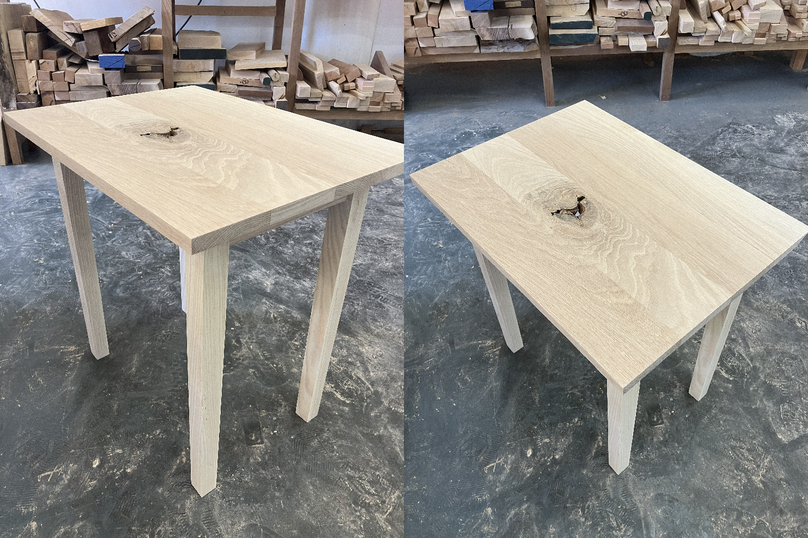
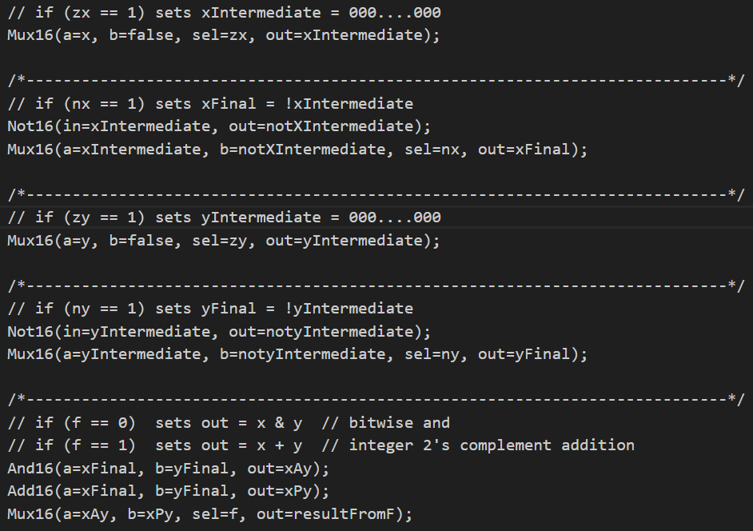

About Me
I currently repair film lighting equipment at a Grip & Electric rental house. I'm most
experienced with repairs on LED lights by brands like
Aputure,
Astera,
ARRI,
and
LiteGear. I'm also familiar with LED lights by Nanlux, Creamsource,
Rosco, and ARRI HMIs.
Before this, I studied computer science with a specialization in Theory
at UChicago. I graduated in 2023 and have been working in the film industry
ever since.
In my free time, I enjoy learning about digital logic circuit design, electronics,
and low-level computer architecture. More on that in the following section!
Fun Projects

A side table made in a woodworking course
Tools used: Chop saw, jointer, planer, table saw, biscuit joiner, drill press, hand chisel, orbital sander. The legs have a slight taper and are joined to the aprons via mortise and tenons. The tabletop is composed of four pieces biscuit jointed together. The tabletop is connected to the table base via four z-clip fasteners.

Controlling the MAX7219 without a Microcontroller... Part 2!
Two 16-bit wide data packets are serially sent to the MAX7219 using four PISO shift registers; the value of each data bit currently being transmitted is indicated by the upper center green LED. The clock pulse (white LED) is generated by a 555 IC in astable mode. A 4-bit counter (indicated by the cluster of four green LEDs in the bottom center) keeps track of when each data packet should be loaded into the MAX7219. In the demo above, the data packets tell the MAX7219 to display “2.” on the 7-segment LED display, which becomes visible after 32 clock pulses.

Controlling the MAX7219 without a Microcontroller
A single 16-bit wide data packet is sent to the MAX7219 in order to bring it out of Shutdown Mode, which is evidenced by the dot coming on in the 7-segment LED display at the end of the video. The data packet is serially transmitted by constructing a boolean function (simplified to its minimum expression using a K-map) that would output the correct data bit (displayed by the multimeter) based on how many clock pulses have passed. The input to the function is a 4-bit counter that I had made from JK flip flops in a previous project. The clock that the 4-bit counter listens to is manually pulsed by my hand pressing a switch on the breadboard.

Mod-16 Counter Using JK Flip Flops
A mod-16 (or 4-bit) counter is implemented with two dual flip flops on a breadboard. The clock that the 4-bit counter listens to is manually pulsed by my hand pressing a switch on the breadboard. In the video, the 4-bit output is ordered with the MSB on the left and LSB on the right.

Constructing a computer with HDL
Solutions to all exercises from Elements of Computing Systems in Chapters 1-6 by Schocken and Nisan. Github repo: [Link]

Study companion PCB
A class project I made in college. I designed and soldered this PCB that includes an ATSAMD21G18 mirocontroller, a light dependent resistor (LDR), and a pushbutton to toggle modes. The board is powered with 3.3-5V via USB-C. The PCB reminds you to get up and turn on the light when the brightness in the room decreases to a certain level: a buzzer sounds to alert you, a red LED lights up, and the OLED displays a message to let you know.